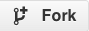
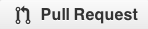

ここでは、知っておきたい基本の説明をしていますが、 github についてもっと詳しく知りたい方は https://help.github.com （英語）を参照してください。
Setup
- まず、github アカウントが必要です。持っていない方はここでアカウントを作成してください。
https://github.com
- 最新の Git をダウンロードし、インストールしましょう。
http://git-scm.com/downloads
- コミットのログに自分の名前を正しく反映させるためにはユーザ設定が必要です。
- Mac の場合、まずターミナルを起動してください。
Windows の場合は Git Bash (Start Menu > Git > Git Bash) を起動してください。
- プロンプトが起動したら、次のコマンドを入力します。[ユーザネーム] の部分は英数字で設定しましょう。
$ git config --global user.name "ユーザネーム"
テストをサブミットした際にはここで設定した名前で表示されることになります。
- 次にメールアドレスの設定をします。
$ git config --global user.email "your_email@address.com"
github のアカウント取得の際に使ったメールアドレスを使ってください。
- (任意) リモートサーバにつなぐたびにユーザネームとパスワードを毎回入力しなければならないという手間を省きたいという方は、パスワードキャッシングをする必要があります。下のページ（英語）を参照してください。
Mac Instructions
Windows Instructions
'Password caching' の項目を参照。
Fork
さて Git のセットアップが終わったら次はテストファイルを取得します。 テストリポジトリはすべて read-only なので fork して自分のコピーを作成する必要があります。そうすることによって最終的に、自分で作成したテストファイルの pull request をしてテストを W3C にサブミットすることができます。
- まず、github テストリレポジトリがあるウェブページにアクセスします。
HTML5: https://github.com/w3c/web-platform-tests
CSS: https://github.com/w3c/csswg-test
- そしてプロジェクトページの右上にある  ボタンを押します。
-
fork には何秒かかかりますが、完了すると自分のフォーク先リポジトリにリダイレクトします。 例えば HTML テストリポジトリを fork した場合、 https://github.com/ユーザネーム/web-platform-tests に自動的にリダイレクトしていることになります。
-
自分のリポジトリがうまく完成したら、次はローカルマシン上に clone （ダウンロード）します。ターミナル (Mac) または Git Bash (Windows) で clone したいディレクトリまで cd して、次のコマンドを実行してください。
-
HTML テストを fork した場合:
$ git clone https://github.com/ユーザネーム/web-platform-tests.git
CSS テストを fork した場合:
$ git clone https://github.com/ユーザネーム/csswg-test.git
これでテストファイルは /web-platform-tests または、
/csswg-test というディレクトリにダウンロードされました。
- これでローカルマシン上に、必要なリポジトリがすべてコピーされました。ディレクトリを観覧してみてください。 github.com 上では、プロジェクト全体の流れや履歴も見ることができます。
- 準備が整いました。次は branch 作成についてです。
Branch
必要なファイルはすべてローカルマシンにそろったとろで、新規ブランチを作成します。 ターミナル (Mac) または
Git Bash (Windows) で次のコマンドを実行します。
$ git checkout -b submissions/ユーザネーム
これで submissions/ユーザネーム という branch が作成され、そのアクティブブランチに切り替わります。
Commit
さて、テストを書き終えてサブミットの準備ができたとします。テストのメインリポジトリに送信する前に、まず自分の git ローカルリポジトリに commit します。
実際、サブミットまでこぎつくまでに自分のリポジトリで変更バージョンを何度も更新していくことになるでしょう。
- ある程度ファイルが完成して、始めのバージョンを保存する準備ができたら、ターミナル (Mac) または Git Bash (Windows)
で自分のファイルのある場所まで cd で移動します。
- 新規、または更新されたファイルの確認は次のコマンドを実行します。
$ git status
これで、元のクローンと自分のローカル上で編集された内容の相違、もしくは最後の commit からの相違を知ることができます。
- 新規作成ファイルは commit の前に add してください。
$ git add [file1] [file2] ... [fileN]
または
$ git add [directory_of_files]
- もう一度
git status を実行して、編集事項を commit する準備をします。これでファイルは 'stage' された状態になります。
- すべて add し終わったら、コメントをつけて commit します。
$ git commit -m "new test files from TestTWF"
- 最終的に自分のテストをメインリポジトリにサブミットするまでの間に、何度もこれらのステップを繰り返すことになるでしょう。
Submit
最終段階です。ここまできたらということは、あなたは既にすばらしいテストを書き上げていることと思います。おめでとう！
- まず、W3C リポジトリにサブミットする前に自分のサーバ上のリポジトリに push してください。
ターミナル (Mac) もしくは Git Bash (Windows)で次のコマンドを実行します。
$ git push https://github.com/ユーザネーム/リポジトリ名.git submissions/ユーザネーム
または省略形で、
$ git push origin submissions/ユーザネーム
注: ここで言う origin とは、元リポジトリをフォーク、そしてクローンした自分のリモートリポジトリ先（リポジトリ名.git）のことをさします。そして、 submissions/ユーザネーム
とは、push しようとしているローカルブランチのことをさします。
- さて pull request を作成してサブミットしましょう。W3C リポジトリにレビュー、マージされるために、追加や変更内容を説明したメッセージを送ることができます。ブラウザで fork した先の自分の github ページへ行きます。
https://github.com/ユーザネーム/test-repo
- 右上にある  ボタンを押します。
- 左には元の w3c/test-repo 、右にはフォークした自分のリポジトリがあるので、自分のリポジトリの branch メニューから submissions/ユーザネーム ブランチに切り替えてください。
- Title フィールドに簡潔に自分のテスト内容の説明を加えてください。シンプルな英語でお願いします。 例: Tests for CSS Transforms
skew() function.
- もし、もっと詳しい説明を入力したい場合は、 comment フィールドを使ってください。
- 最後に をクリックして送信します。
さて、これでおしまいですが、もしあなたが今 Test the Web Forward イベントに参加中ならエキスパート達にレビューを頼んでみてください。
もし自分でやっているのなら（すばらしい！）なるべくすぐにレビューをしますので pull request をして、気軽にこちらの Test suite の mailing list にメールでレビューを頼んでみてください。
おまけ
- 初めて
git add [file] で新規ファイルを加える場合、インデックス上にあるファイルすべてをひとつひとつ git add + git commit をしなくても、下記のように -a フラッグを使って同時に commit することができます。
$ git commit -a -m "saving a version of my test"
- master ブランチにも
submissions/ユーザネーム 変更内容を常に更新したい場合には、
$ git checkout master
これで master が現在のアクティブブランチになりました。
$ git merge submissions/ユーザネーム
これで submissions ブランチが master にマージされました。
$ git push origin master
最後にプッシュしてサーバにも更新内容が反映されました。